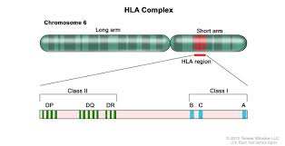
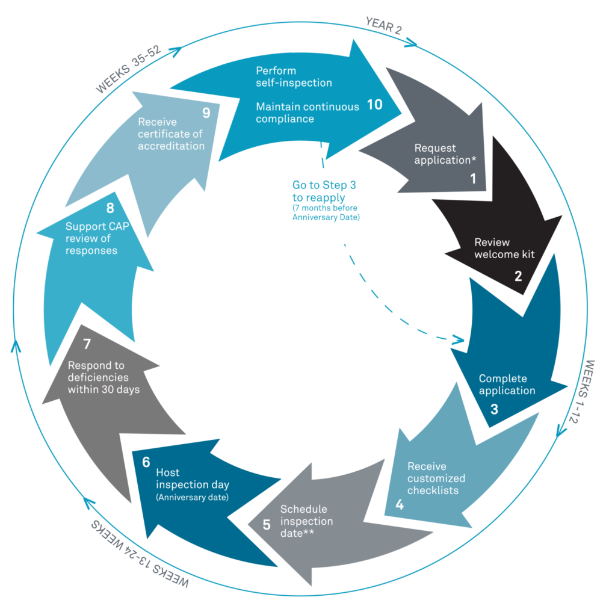

PGT-A/M/SR
(Tran Van Thong, MD)
Linkage Analysis
Haplotyping
STR SNP
PGT-M: STRs vs SNPs
karyomapping (phacogen)
PGT-SR bất thường cấu trúc cân bằng
robersinian translocation
how to find it?
only do in Fish
normal phoi
how to choose the embryo that don’t carry the balanced translocation?
parents have structural balanced translocation
linkage
UPD - target region UPD/ROH
UPD: Uniparental Disomy ROH: Region of Homozygosity
Integrate SNP in PGT
Journal from disease to healthy baby
(Prof Nguyen Dang Ton - Genome)
monogenic
Polygenic
roi loan NST
Benh lien ket gioi tinh
Gene-phenotype Relationships
>7000 benh di truyen
Genetic testing –> IVF –> PGT –> Healthy baby
Infertility in Male
(Dr. Nguyen Khac Han Hoan)
mat doan azf klinefelter
CBAVD Kallmann
Epigenetics
PGT-TOTAL
(Le Ngoc Yen)
Robertsionian translocation Reciprocal Translocation
Marker STR for PGT-SR
Breakpoint
Sang loc da ton thuong
PGT-TOTAL took 14 days for return result
PGT-HLA Matching
(Ma Pham Que Mai, MsC)
Preimplantation Genetic Testing-Huamn Leukeocyte Antigen (PGT-HLA)
related to PGT-M
can combine with PGT-M
Chromosome 6
HLA region

https://visualsonline.cancer.gov/details.cfm?imageid=10431Find Embryo has HLA match with the affected sib
Pre-PGT –> IVF –> PGT-M & PGT-HLA –> Transfer HLA-matched embryo
Deal with healthy embryo but not HLA-matched?
STR linkage
flowchart TD
A[Patient with Sibling in Need of HSCT] --> B[Genetic Counseling]
B --> C[HLA Typing of Family Members]
C --> D[Design of HLA Markers/Probes]
D --> E[IVF Procedure]
E --> F[Embryo Biopsy]
F --> G1[PGT-M Analysis]
F --> G2[PGT-HLA Analysis]
G1 --> H[Embryo Selection]
G2 --> H
H --> I[Transfer of Disease-Free HLA-Matched Embryo]
I --> J[Prenatal Confirmation]
J --> K[Birth of Healthy HLA-Matched Baby]
K --> L[Cord Blood/Stem Cell Collection]
L --> M[HSCT for Affected Sibling]
classDef process fill:#d4f1f9,stroke:#333,stroke-width:1px;
classDef important fill:#ffcccc,stroke:#333,stroke-width:1px;
class B,C,D,G1,G2,H process;
class E,F,I,K,L,M important;Figure: PGT-HLA Workflow for Stem Cell Donor Selection
Reference: Based on workflow described in Kahraman et al. (2021) “Current clinical application of preimplantation genetic testing for human leukocyte antigen matching: a systematic review.” Human Reproduction Update, 27(5):885-903.
Success rate low High cost
| Fragile X Syndrome |
Notes
Genome use Ion Torrent NGS platform, Ion Reporter software, Thermo
Genome Company was accredited by CAP https://www.cap.org/laboratory-improvement/accreditation/laboratory-accreditation-program

Gen QA https://genqa.org/